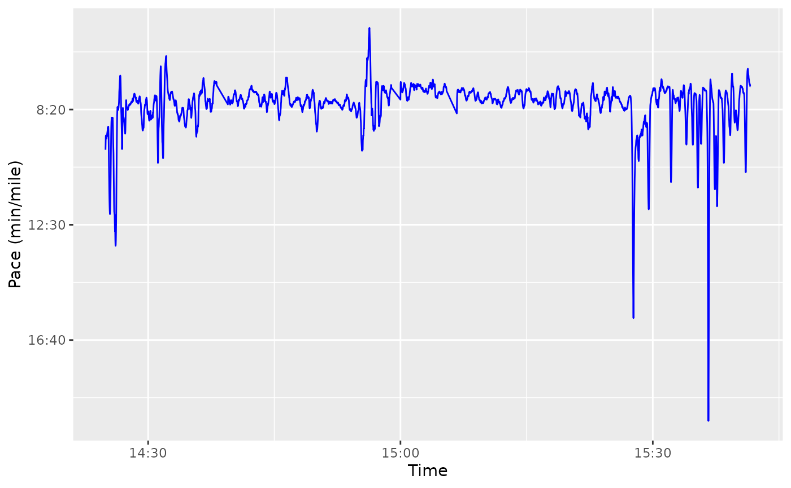
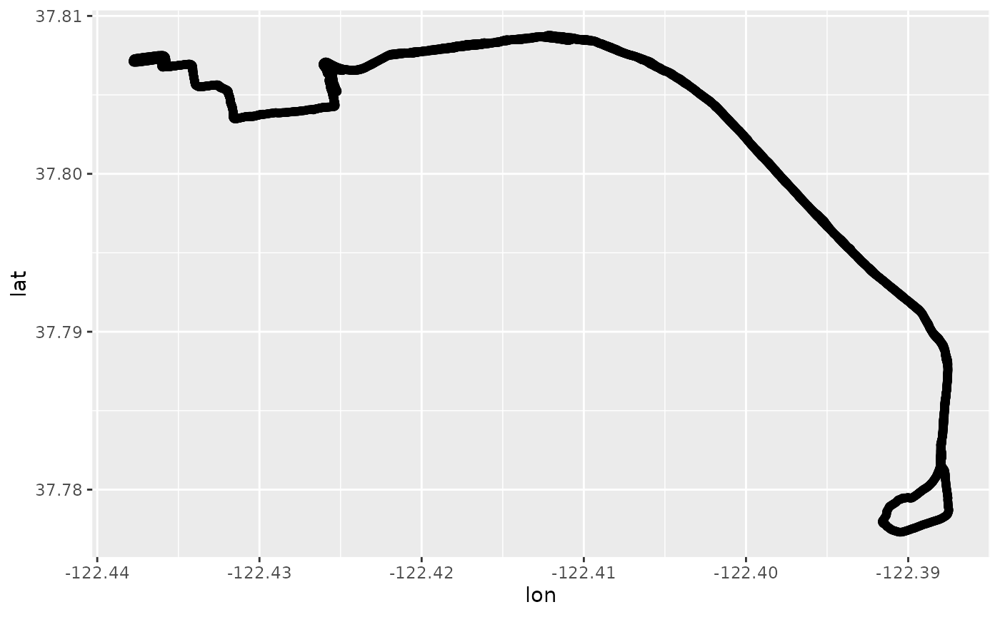
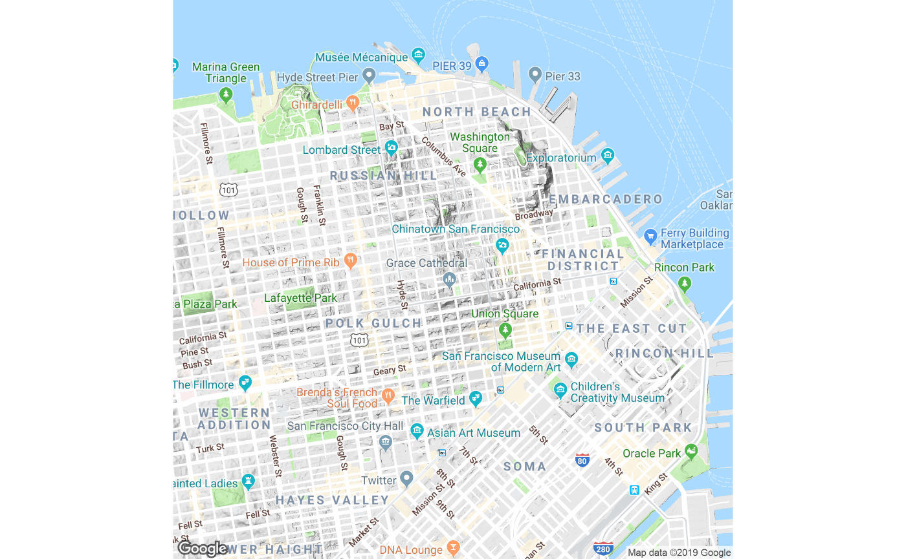
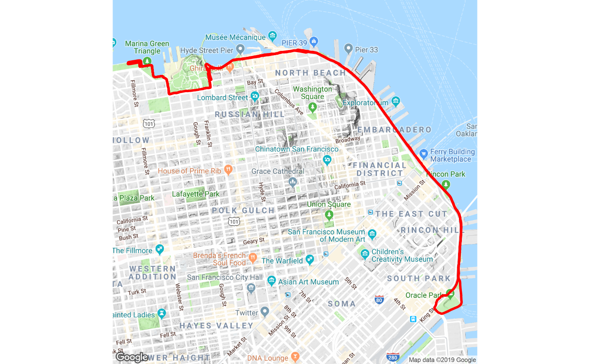

activatr (pronounced like the word “activator”) is a
library for parsing GPX files into a standard format, and then
manipulating and visualizing those files.
Getting GPX Files
The process to get a GPX file varies depending on the service you use. In Garmin Connect, you can click the gear menu on an activity and click “Export to GPX”. This package includes sample GPXs as examples.
Parsing GPX Files
Basic parsing of a GPX file is simple: we use the
parse_gpx() function and pass it the name of the GPX
file.
library(activatr)
# Get the running_example.gpx file included with this package.
filename <- system.file(
"extdata",
"running_example.gpx.gz",
package = "activatr"
)
df <- parse_gpx(filename)parse_gpx() returns an act_tbl, which has a
column for latitude (lat), longitude (lon),
elevation (ele, in meters), and time
(time).
| lat | lon | ele | time |
|---|---|---|---|
| 37.80405 | -122.4267 | 17.0 | 2018-11-03 14:24:45 |
| 37.80406 | -122.4267 | 16.8 | 2018-11-03 14:24:46 |
| 37.80408 | -122.4266 | 17.0 | 2018-11-03 14:24:48 |
| 37.80409 | -122.4266 | 17.0 | 2018-11-03 14:24:49 |
| 37.80409 | -122.4265 | 17.2 | 2018-11-03 14:24:50 |
activatr also overrides summary() to create
a basic one-row tibble summarizing the activity.
summary(df)| Distance | Date | Time | AvgPace | MaxPace | ElevGain | ElevLoss | AvgElev | Title |
|---|---|---|---|---|---|---|---|---|
| 9.407317 | 2018-11-03 14:24:45 | 4622s (~1.28 hours) | 491.319700445454s (~8.19 minutes) | 186.462178755299s (~3.11 minutes) | 193.9317 | 259.2122 | -24.29198 | Sunrise 15K PR (sub-8:00) |
For more advanced parsing options, see
vignette("parsing").
Analyzing GPX Files
Since this is just a tibble, we can analyze and plot it using usual
techniques and libraries. activatr includes a few helpers,
like mutate_with_speed(), speed_to_mile_pace()
and pace_formatter() to make it easier to analyze pace
using these libraries.
library(ggplot2)
library(dplyr)
df |>
mutate_with_speed(lead = 10, lag = 10) |>
mutate(pace = speed_to_mile_pace(speed)) |>
filter(as.numeric(pace) < 1200) |>
ggplot() +
geom_line(aes(x = time, y = as.numeric(pace)), color = "blue") +
scale_y_reverse(label = pace_formatter) +
xlab("Time") +
ylab("Pace (min/mile)")
For more details on those helpers, see
vignette("pace").
Visualizing GPX Files
Once we have the data, it’s useful to visualize it. While basic visualizations work as expected with a data frame:

It’s more helpful to overlay this information on a map. To aid in
that, get_ggmap_from_df() is a wrapper around
ggmap::get_map() that returns a correctly sized and zoomed
map, atop which we can visualize our track using
ggmap::ggmap().
Let’s see that on its own to start:
library(ggmap)
ggmap::ggmap(get_ggmap_from_df(df)) + theme_void()
We now have a map at the right size to visualize the run. Putting it all together, we can make a nice basic graphic of the run:
ggmap::ggmap(get_ggmap_from_df(df)) +
theme_void() +
geom_path(aes(x = lon, y = lat), linewidth = 1, data = df, color = "red")